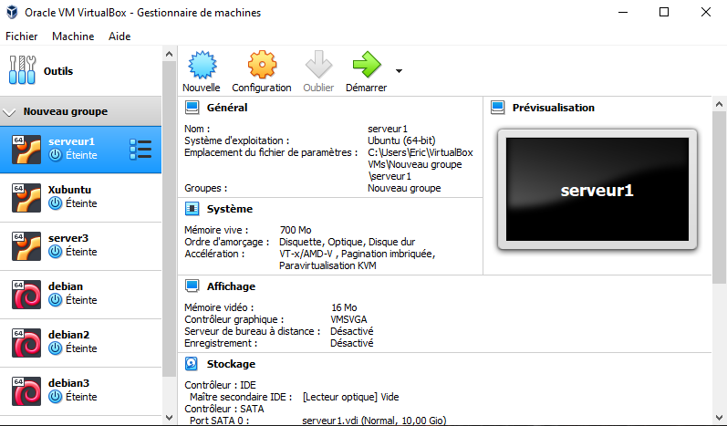
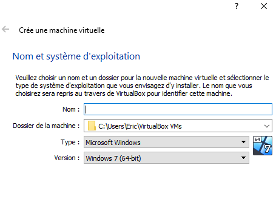
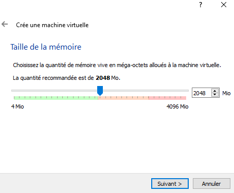
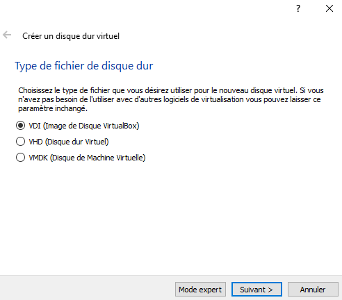
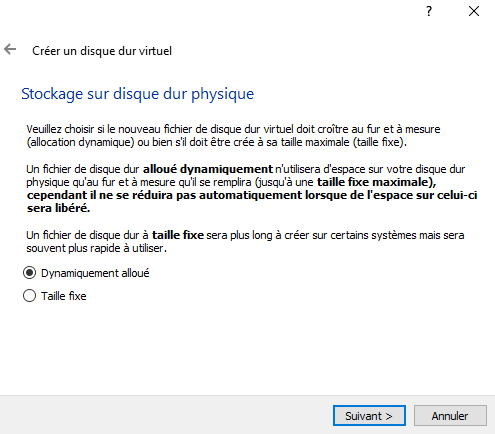
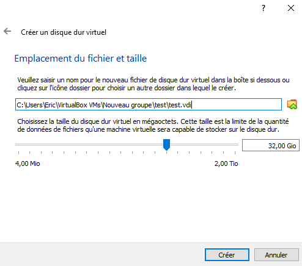
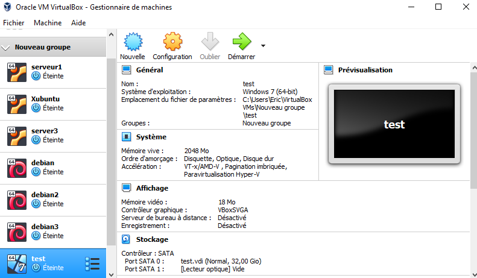

avant de commencer nous allons installé Virtualbox, c'est un logiciel qui va nous permettre de construire une machine virtuel
pour commencer nous allons lancer VirtualBox, et nous allons voir ceci :
on fait Nouvelle
choississez votre nom pour votre machine virtuel, choississez son type et version (il est mis par default sur windows 10) et faites Suivant
choississez la taille de la RAM de la machine virtuel (je vous conseille de baissé et de mettre à 1024 Mo ou même à 512 Mo, certe votre machine est lente mais c'est le mieux à prendre pour votre ordinateur) et faites Suivant
choissisez VDI et faites Suivant
je vous conseille de prendre la Dynamiquement alloué et faites Suivant
choississez la taille de son disque dur et faites Suivant
une fois créer, démarré la machine puis amusez-vous ^^